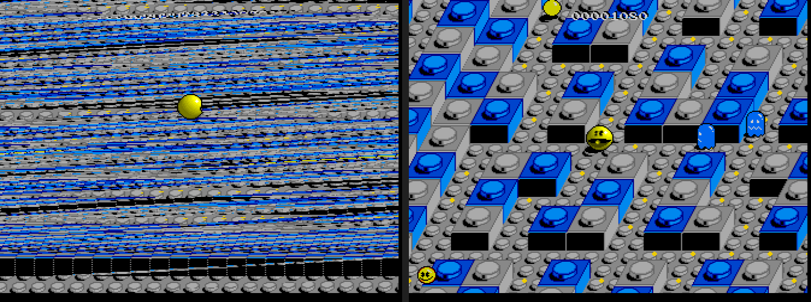

Copperline 1.0.1: the first maintenance release
Copperline 1.0.1 is out, eight days after 1.0.0. It is the first release from the new 1.x maintenance branch: fixes for 1.0 now ship as 1.0.x releases, while larger changes wait for the next major version.
Most of it fixes problems reported against 1.0.0 on Discord and GitHub. Thank you to everyone who tried it and reported them.
AGA bitplane fetch stop
AGA's Alice keeps the hardwired $D8 bitplane fetch stop, as ECS Agnus does, and lifts it only while BEAMCON0 selects HARDDIS or VARBEAMEN, or BPLCON0 selects super-hires or ultra-hires. Copperline treated every AGA machine as if HARDDIS were set, so a program that sets DDFSTOP past $D8 fetched an extra word on every line, and each line started one word further along than the last. Pacmania under WHDLoad on an A1200 is one example. A new test program checks the stop and each control that lifts it.

Blitter, warm reboots and the 68060
- Blitter on 68020 and faster CPUs. BBUSY drops two colour clocks before the blitter writes its final word. A fast CPU could write BLTCON0 for the next blit inside that gap and cancel the write, and the end-of-blit write-back could overwrite registers already set for the next blit. Both are fixed, which restores bitplanes missing from small
graphics.librarycopies on an A4000. A 68000 is too slow to reach the gap. - Warm reboots on the A3000 and A4000. Fat Gary's COLDBOOT flag is set at power-on only. Copperline set it again on every reset, so Kickstart treated each warm reboot as a cold start: the Kickstart 3.2 boot menu's device choice was ignored, and
RAD:and resident modules were lost. - 68060 FPU. Kickstart builds a 68881/68882/68040-style empty FPU frame into each new task, which an enabled 68060 FPU reads at a different size, so AmigaVision's SetPatch crashed and Kickstart 3.1 showed a black screen. Like real 68060 boards, Copperline now disables the FPU at every reset and leaves
68060.libraryto enable it. LC060 and EC060 configurations now really have no FPU.
Hard disks, input and Windows
- Three fixes to the bundled
copperhf.device: HDToolBox 3.1 finds its drives, HDToolBox 3.2 no longer crashes the machine under the JIT, and a partition with a four-character name mounts from 32-bit motherboard RAM. - A fast high-resolution mouse no longer moves the pointer backwards when the Amiga's 8-bit mouse counters would wrap.
- Holding a key or mouse button in warp mode runs at normal speed, so keys no longer repeat and double-clicks work.
- Resizing the window no longer hangs Copperline on Windows.
- Dropping a zipped ADF onto the window inserts it as a floppy instead of trying to start it with WHDLoad.
Settings and screenshots
Settings changed from the menu, a hotkey or the status bar are now saved to your default configuration, which is created if you do not have one, so they are still set at the next launch. Sessions started from your own configuration file or with --factory leave their files alone. The launcher no longer drops settings it has no rows for when it saves. See settings the menu remembers.
The camera button and Cmd+S / Alt+S now save the picture as it is displayed, with the current scaling, shader, bezel and tint. Native 1:1 screenshots moved to Cmd+Option+S / Ctrl+Alt+S, and interlaced screens now save at full height. See saving screenshots.
Other changes
[display] track_display = "cylinder"makes the status bar's drive counter show cylinder and side, so track 81 reads40.1.[audio] floppy_sounds_setplays a WinUAE or FS-UAE floppy sound sample set instead of the synthesized drive sounds. No sets are included.- The A2065 Ethernet board honours its station address, multicast filter and promiscuous mode, and VS Code source debugging works with programs built by AmigaPorts amiga-gcc. Thanks to Tinic Uro for both.
- WHDLoad 20.1 is accepted: its new download had stopped 1.0.0's game library installing WHDLoad support.
- Security updates to
ruzstd,rustlsandwasmtime, and them68kCPU core is updated to 0.14.6.
Before upgrading
- Every netplay peer needs 1.0.1.
- Recreate RetroArch save states after updating the core. Desktop save states still load.
- Menu settings are now saved to your default configuration, as described above.
- With a 68060, install
68060.libraryas on a real board, or the system runs without an FPU. - Scripts using
--mouse-to-afteror--pen-afternow aim at--screenshot-afterpixels, as documented. 1.0.0 used different coordinates.
Thanks to the patrons who pay for the hardware used to check the emulation, to Tinic Uro for code, and to everyone who reported problems with 1.0.0.
Download Copperline 1.0.1 Try in your browser
Downloads cover macOS, Linux x86-64, Windows x64/ARM64 and three RetroArch platforms. Homebrew users can run brew update followed by brew upgrade copperline. The release includes a PDF manual and checksums. Read the full release notes or changelog.